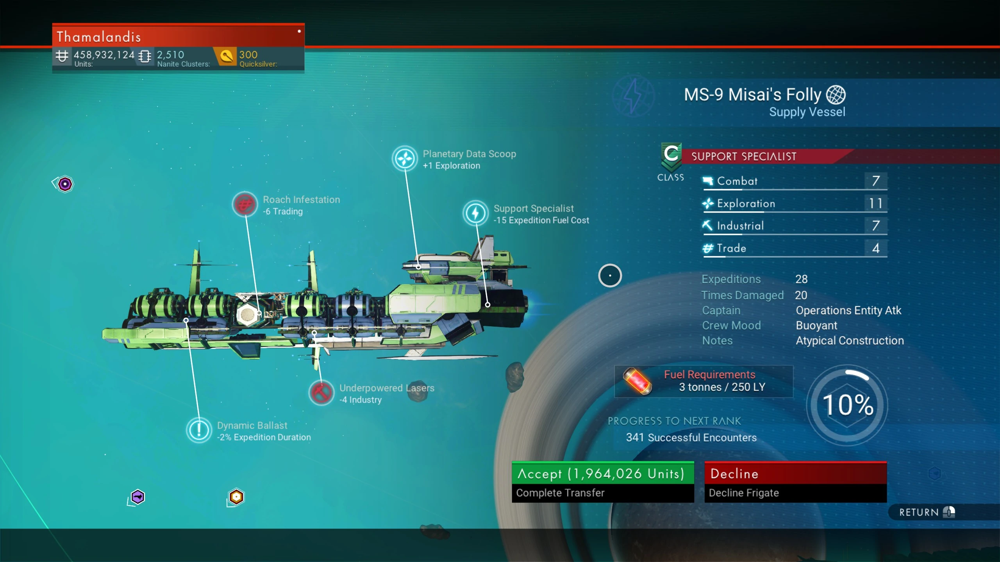

No Man's Sky Frigate Calculator
This tool is here to help calculate a frigate base stats and avoid recruiting a bad one.
Frigate Wiki:
https://nomanssky.fandom.com/wiki/Frigate

29
-9
28
Stats
Bonuses
Expeditions
Calculate